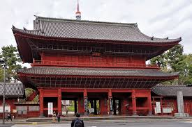
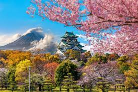

Vive la tradición y modernidad de Tokio
Este paquete incluye:
- Visita al templo Senso-ji
- Recorrido por el cruce de Shibuya
- Pase a museos y jardines imperiales
- Transporte en JR Pass (tren)
- Alojamiento céntrico con desayuno
Duración: 6 días / 5 noches
Galería de Tokio

